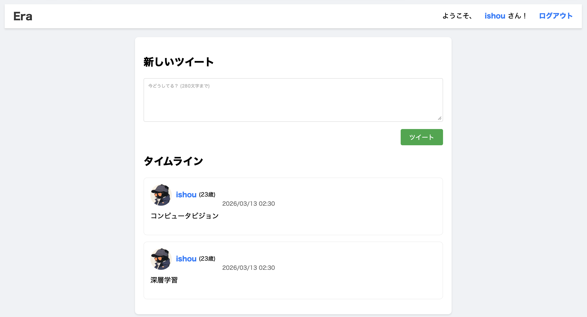

[Profile]
Ishou Ko | Keio University Aoki Lab M1 | AI・CV Researcher / AI Engineer
慶應義塾大学大学院 理工学研究科 総合デザイン工学専攻 電気情報工学 青木研究室に所属。深層学習ベースのコンピュータビジョンを専門とし、特に画像復元、動画生成、3D再構成、イベントカメラの研究とAI開発に従事しています。
I am a graduate student at the Aoki Media Sensing Laboratory within the Graduate School of Science and Technology at Keio University. My research expertise lies in deep learning-based computer vision, specifically focusing on image restoration, video generation, 3D reconstruction and event camera. In addition to my academic research, I am actively engaged in AI application development.
Publications / 学会発表
2026
IEEE ICIP 2026
Weixiang Hu, Bohan Huang, Shigeaki Namiki, Yuka Ogino, Takahiro Toizumi, Atsushi Ito, Yoshimitsu Aoki. "EMARS: Event-based Motion-Aware Correction, Deblurring and Interpolation of Rolling Shutter Images"[pdf]
2026
MIRU 2026
胡 煒翔, 黄 柏翰, 並木 重哲, 荻野 有加, 戸泉 貴裕, 伊藤 厚史, 青木 義満. "イベントデータを用いた動き推定に基づくローリングシャッター画像の歪み補正・ブレ除去およびフレーム補間"[more]
2026
CVPR 2026
投稿・査読経験
Patents / 特許
画像処理装置、画像処理方法及びプログラム
PCT国際出願
Internships / インターンシップ
2026/09 - 2026/11
株式会社NEC バイオメトリクス研究所
R&Dインターン：画像認識エンジン強化のためのセンシング最適化に関する研究開発
Research on AI friendly image sensing and enhancement
Research on AI friendly image sensing and enhancement
2026/07 - Now
株式会社光通信/コア・コンサルティング・グループ 情報システム部グループDX課
AIインターン
2026/01 - 2026/07
株式会社Crystal-Method
AIシステム開発エンジニア
Awards / 受賞歴・奨学金
2024/04 - 2026/03イオンスカラシップ
2023/10 - 2024/03慶應義塾大学給費奨学金
2023/04 - 2023/09山岡憲一記念基金奨学金
Education / 学歴
2026/04 - Now
慶應義塾大学大学院 理工学研究科
総合デザイン工学専攻 電気情報工学カリキュラム 青木研究室
2022/04 - 2026/03
慶應義塾大学 理工学部
電気情報工学科 青木研究室
Skills / スキル・資格
プログラミング言語
Python
C
C++
TypeScript
JavaScript
SQL
HTML/CSS
Matlab
フレームワーク・ライブラリ
PyTorch
TensorFlow
OpenCV
NumPy
Pandas
scikit-learn
React
React Native
FastAPI
ツール・開発環境
Git
GitHub
Linux
Docker
Xcode
Claude Code
Codex
AI研究・開発領域
Deep Learning
Machine Learning
Computer Vision
LLM Application
STT/TTS
AI Agent
Infrastructure
その他
English Paper Reading & Writing
Semiconductor
Japanese
English
Chinese
資格
- TOEFL iBT: 108/120 (Reading 30, Listening 27, Speaking 24, Writing 27)
- 日本語能力試験: N1
- 普通自動車第一種運転免許
Personal Projects / 個人プロジェクト
2026

EMARS: Event-based Motion-Aware Correction, Deblurring and Interpolation of Rolling Shutter Images
RS-CMOS sensors suffer from distortions and blur, which event-based Implicit Neural Representations (INR) often fail to resolve due to motion information loss. We propose a flow-centric unified framework that explicitly utilizes time-conditional optical flow as the primary kinematic constraint. By integrating a Flow-Constrained INR, our model ensures physically consistent motion trajectories for simultaneous RS correction, deblurring, and arbitrary-rate interpolation. Experiments demonstrate that our method achieves state-of-the-art performance across all benchmarks.
ICIP2026にて発表予定です。
Read More
ICIP2026にて発表予定です。
2025

AI System Web Application
ローリングシャッター画像とイベントデータから、歪みのない高フレームレート画像を生成するAIウェブアプリ
AI-powered web application that generates distortion-free, high-frame-rate images by fusing Rolling Shutter (RS) images with event-based data
Read More
AI-powered web application that generates distortion-free, high-frame-rate images by fusing Rolling Shutter (RS) images with event-based data

AI Expense Agent
自然言語で支出・収入を記録し、カテゴリ分類、月次統計、予算管理、月末支出予測、支出増加要因の分析、節約提案まで行うAI家計管理Agent
An AI-powered personal finance management agent that records income and expenses through natural language, categorizes transactions, generates monthly statistics, manages budgets, forecasts end-of-month spending, analyzes the causes of increased spending, and provides money-saving recommendations.
Read More
An AI-powered personal finance management agent that records income and expenses through natural language, categorizes transactions, generates monthly statistics, manages budgets, forecasts end-of-month spending, analyzes the causes of increased spending, and provides money-saving recommendations.

Era SNS Web Application
ユーザーを年齢層（Z世代、ミレニアル世代、シニア世代など）ごとに最適化された「セーフゾーン」に自動で振り分け、世代特有の文化や共通言語に基づいた深いコミュニケーションを促進するSNSウェブアプリ
A next-generation SNS that automatically categorizes users into optimized "Safe Zones" based on their age demographics (Gen Z, Millennials, Seniors, etc.), fostering deeper connections through shared cultural contexts and generation-specific languages
Read More
A next-generation SNS that automatically categorizes users into optimized "Safe Zones" based on their age demographics (Gen Z, Millennials, Seniors, etc.), fostering deeper connections through shared cultural contexts and generation-specific languages